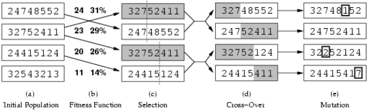

The Mechanical Turk was a chess playing automaton built in 1770. It was quite good at chess but didn’t beat everybody. It’s creator would always opened the doors and drawers for everyone to see the machinery inside before it started playing.
However, this was a hoax as there was actually a small human player hiding inside
who moved around inside to hide as different drawers were opened. He could see the
moves being made through a magnetic chess set and could make moves by
moving the Turk’s arms. This was using human intelligence to fake artificial
intelligence.
Despite being fake, this is an example of people’s interest very early in history of
Artificial Intelligence.
The famous science fiction author Issac Asimov developed the Three Laws of Robotics in the 1940s. The laws are as follows:
Artificial intelligence and robots turning on humanity was a popular topic in science fiction novels and Asimov’s laws was his take on these plots, not to have the robots “turn stupidly on [their] creator for no purpose”. The laws pose an interesting question in AI ethics. For example the famous trolley ethical experiment of whether one should pull the lever to save five but kill one - what should an AI do given the situation?
Would we program our self-driving cars to kill ourselves in a situation like this?
In 1950, Turing wrote about what is now called the Turing test and posing the
question Can Machines Think? However, instead of answer the question, Turing
poses to replace the question by another.
He comes up with what he calls the Imitation game, where a computer has to try
to imitate a human so the person talking to it can’t tell the difference. In the original
paper, the imitation game consists of three people: a man (A), a woman
(B) and an interrogator (C). The interrogator stays in a room apart from
the other two. The object of the game for the interrogator is to determine
which of the other two is the man and which is the woman. A tries to get
the interrogator to guess wrong while B tries to help the interrogator. The
interrogator is allowed to put questions to A and B. Now he asks the question,
“What will happen when a machine takes the part of A in this game?”,
“Will the interrogator decide wrongly as often when the game is played like
this as he does when the game is played between a man and a woman?”.
However he is not saying this automatically means the computer can think.
Nowadays, the imitation game is usually about whether we can tell if we are talking
to a human or a computer, not the man/woman version in Turing’s original paper.
Turing also had some sample Q&As on how this should go:
Q: Write me a sonnet on the subject of the Forth Bridge
A: Count me out on this one. I never could write poetry.
Q: Add 34957 to 70764
A: (Pause about 30 seconds and then give as answer) 105621
Q: Do you play chess?
A: Yes
Q: I have K at my K1 and no other pieces. You have only K at K6 and R at R1. It is
your move. What do you play?
A: (After a pause of 15 seconds) R-R8 mate.
The Turing test has been used widely as a test for artificial intelligence and for a long
time there has been an annual competition (The Loebner prize) for chat bots.
However, the Turing test as been criticized to not properly test of artificial
intelligence as people build bots specifically to pass the Turing test (such as PARRY)
that are not intelligent at all and instead reflect or play the role of a child or a
schizophrenic.
In the summer of 1956, a two-month workshop was organized at Dartmouth College
for U.S researchers in the field. This was where the field of AI research was born. Not
much was accomplished at the workshop, but for the next 20 years, the people who
were there, their student and colleagues at MIT, CMU, Stanford and IBM would
dominate the field of AI.
There were 10 attendees in total, and all were ’superstars’ in the field of computer
science. This was also where the term Artificial Intelligence first started being
used, thanks of John McCarthy.
In the history of AI, there has been a common repeated pattern of Success →
Hubris → Nemesis.
Success
Something amazing happened, like a breakthrough, or perhaps unrelated that makes
everyone think we can do something amazing.
Hubris
Something very big and ambitious must be easily achievable thanks to AI and it
shouldn’t take very long because AI is amazing.
Nemesis
It was much harder than we thought and it may not be possible at all. It currently
seems like we are in an AI Success/Hubris position again with AI coming up
everywhere (AlphaGo, driverless cards etc.), but is this just yet another loop of
Hubris/Nemesis?
Success
1943 - Neural networks proposed by McCulloch and Pitts
1951 - Marvin Minsky built first artificial neural network
1957 - Frank Rosenblatt invented the perceptron and was able to teach it to learn
some boolean functions
Hubris
With artificial neurons we should be able to do anything, since they were inspired by
the brain so we can just simulate the brain and then we’ve built an artificial
brain!
Nemesis
Minsky and Seymour Papert wrote a book Perceptrons, 1969 which argued
that neural networks were limited in scope, including some impossibility
theorems. This led to neural network research moribund for the next 15
years.
However now since the invention of back propagation by Werbos, neural
networks are a big part of machine learning (for example AlphaGo) and
again we have success and hubris for the potential that neural networks can
achieve.
Success
In 1956, Newell, Simon and Shaw were working on a logic theorem prover that proved
some of the theorems in “Principia Mathematica”. Not all the theorems were proved,
but the approach seemed valid.
Hubris
In 1959, Newell, Simon and Shaw generalised their approach from logic to all
problems to create a“General Problem Solver” using a similar approach as their logic
machine in the hopes it can solve any problem.
Nemesis
The General Problem Solver never solved anything interesting as the combinatorial
explosion was just too big and they did no have good heuristics. Many of the
theorems in Principia were still not solved as well.
Success
In 1959, Arthur Samuel produced a learning checkers program with techniques like
minimax and alpha-beta that beat a “master” player.
Hubris
It looked like games playing had been cracked, if a computer could beat a human in
checkers, surely it would apply to all other games easily. People predicted in 10 years
a computer would beat the world chess champion.
Nemesis
Chess was a much more complicated game that took longer to solve. Additionally,
computers playing Go were horrible due to the large search space and other games
like Bridge and Poker were also bad.
As we know recently, AlphaGo beat a top Go player in 2016 and Kasparov (Chess
champion) was beaten by “Deep Blue” in 1997.
Weak AI
Weak AI takes the view that computers are power tools that can do things human
otherwise do and can be used to study the nature of mind in general. Weak AI are
focused on one narrow task, for example chess playing AIs which can only play
chess. Most currently existing systems considered to be AI are weak at the
moment.
Strong AI
Strong AI takes the view that a computer is a mind like a human mind. Seale
identified a philosophical position he called “strong AI”:
The appropriately programmed computer with the right inputs and outputs would thereby have a mind in exactly the same sense human beings have minds.
He also ascribes the following positions to advocates of strong AI:
Artificial General Intelligence (AGI)
More recently, there is a second “strong AI” definition as an artificial general
intelligence which is a machine with the ability to apply intelligence to any problem,
rather than just one specific problem and could successfully perform any intellectual
task that a human being can. The idea is making an AI system that can do
anything.
Ben Goertzel proposed a Robot Coffee Test for AGI. Can you make a robot that
can go into any house and make some coffee? The house should be just any ordinary
house. This is quite a difficult test as it involves finding coffee, finding water, boiling
the water... However, if there is a robot that was built to do this, does it count as
AGI? Can the same robot learn how to build a brick wall without being
reprogramming?
This leads to an analogy with NP-Complete problems with “AI-Complete” problems.
This implies the difficulty of these problems is equivalent to that of solving the
central artificial intelligence problem of creating an AGI. An AI-Complete
problem reflects an attitude that it would not be solved by a simple specific
algorithm.
There have been many arguments and objections to the Turing Test as a way to
signify machine intelligence. Turing himself as responded to many of these
objections.
Theological Objection: A Man has a soul, machines do not
Alan Turing: Can we deny His power to give a soul to a machine?
Argument from various disabilities: No machine can X (e.g. tell right from
wrong)
Alan Turing: Becomes a less powerful argument each day as machines are capable
of doing more as time goes on
Lady Lovelace’s [Ada’s] objection: Computers do whatever we know
how to order them to perform, so computers cannot do anything really new
Alan Turing: Machines constantly surprise us
Argument from informality of behaviour: Impossible to write down formal rules
for every situation
Alan Turing: Impossible to prove people not rule-driven
Argument from ESP: Telepathy would let humans win imitation game
Alan Turing: Put competitors in ’telepathy-proof’ room
Argument from Consciousness: No mechanism could feel pleasure, grief...
Alan Turing: Danger of Solipsism(A theory in philosophy that your own existence
is the only thing that is real or that can be known)
Argument from continuity in the nervous system: The brain does not operate
digitally
Alan Turing: Computers can simulate continuous behaviour, e.g. Statistically,
graphically, numerically...
Godel’s theorem states that any consistent and powerful format system must be
limited. There must be true statements it cannot prove.
Because computers are formal systems and minds have no limit on their abilities,
therefore computers cannot have minds. This point seems to prove that strong AI
cannot exist as it certainly applies to computers.
However, Alan Turing had two points to counter this:
The issue with the actual Turing test is that the chatbots trying to pass the test use
lots of tricks to try and trick the human on the other end.
For example ELIZA used simple pattern matching:
Jason Hutchens, who won the Loebner Prize in 1996 wrote an article “How to
pass the Turing test by cheating” where he demonstrated the techniques his chatbot
used and how it was not very clever. He also states that “Turing’s imitation game
in general is inadequate as a test of intelligence, as it relies solely on the
ability to fool people, and this can be very easy to achieve, as Weizenbaum
found.”
Another example is the 2014 winner, “Eugene” who posed as a 13-year old,
non-native English speaking Ukrainian, which gives lots of ways for judges to explain
away his poor English.
Ultimately, whether or not it has been passed, the Turing Test does not drive much
AI research.
The Chinese Room is one of the most famous attacks on AI. It was created by John
Searle.
The Chinese Room argument holds that a program cannot give a computer a mind or
understanding, regardless of how intelligently or human-like the program may make
the computer behave. The argument specifically refutes strong AI having a mind like
a human being.
Suppose there is a computer program that behaves as if it understands Chinese. It
can take in Chinese characters as input and by following it’s instructions, produce
other Chinese characters as output and suppose it was convincing enough to pass the
Turing Test: it convinces a human Chinese speakers that the program is itself a live
Chinese speaker and to all questions that the person asks, it makes appropriate
responses. Searle then asks the question: “Does the machine literally understand
Chinese? Or is it merely simulating the ability to understand Chinese?” The first
would be a strong AI, whereas the latter would be weak AI. Then, the thought
experiment is as follows:
Suppose someone is in a closed room with a book in English of the computer
program. The person can receive Chinese characters through a slot in the door,
process them according to the program’s instructions, and produce Chinese
characters as output. This is just like running the program manually. The argument
is that even though the person is producing behaviour which is interpreted as
demonstrating intelligent conversation, the person would still not be able to
understand Chinese and therefore Searle argues that the computer would not be able
to understand the conversation either.
A search problem is defined rigorously. For example it is problems on propositional
satisfiability, graph colouring, playing chess etc.
A search algorithm is given an Instance of the problem and the algorithm has to
find a Solution to that instance (or report that there is guaranteed to be no solution
to that instance or report a timeout if it cannot determine).
The boolean SATisfiability problem is an example search problem. An example
Instance is a list of words: ABC, ABc, AbC, Abc, aBC, abC, abc. A Solution is a
choice of upper/lower case letters where each word must contain at least one of
our choices. For example AbC, which is a unique solution to the previous
instance.
SAT is a search problem because there is no efficient algorithm known for SAT. In
fact, 3-SAT is NP-Complete. 3-SAT is where each word contains exactly 3 letters.
Many AI problems fall into the NP-Complete class. DPLL is one of the algorithms to
find a solution to that SAT problem.
The Travelling Salesman problem is another famous search problem. It involves a salesman travelling across different cities trying to visit each node. An Instance of the problem would be a graph with a cost on each edge and a Solution as a tour visiting all nodes and returning to base or meeting some cost limit. Another variant is to find the minimum possible cost.
The travelling salesman problem is also NP-Complete if you want to check that the tour costs no more than some limit. A complete solution might need to check every possible path. Of course there are many applications of this problem in real life, especially for delivery companies or moving efficiently around a warehouse for Amazon.
Board games like chess and checkers could be thought of as a search problem where the Instance is the current board position of the game and the Solution is a winning strategy from that position. Such games are usually PSPACE-Complete.
There are two main kinds of search algorithm:
Search states summarise the state of search, in SAT is might be represented by aB. In
TSP, a search state might specify some of the order of visits. In Checkers, a search
sate might be represented by the board position. With search states we can generalise
such to not just finding a solution to a problem.
A Search space is a logical space composed of:
Think of a search algorithm as trying to navigate this extremely complex space. It is always just an abstraction, we don’t store the whole search space and study it.
Search trees do not summarise all possible searches, instead it is an abstraction of one possible search. The root of the search tree is the initial state, the branches are actions and the nodes correspond to states in the state space of the problem. We can expand the current state; that is, applying each legal action to the current state, thereby generating a new set of states. We add new branches from the parent node leading to new child nodes where are the new states. At the very bottom of the search tree, the leaf nodes represent solutions or failures.
Search trees are a very useful concept, but as an abstraction. We do not want
algorithms to store whole search trees as that would require exponential space. We
should also discard any nodes in the search tree that are already explored. Search
algorithms only store the frontier of the search, that is the set of all lead nodes
available for expansion at any given point.
We must also be careful of loops in a search tree, where a child node in the tree is
the same state as a previous node. Loops can cause certain algorithms to fail, making
otherwise solvable problems unsolvable. Usually, there is no need to consider such
loops as path costs are additive and step costs are non-negative. A loop to any given
state is never better than the same path with the loop removed. Loops are
a special case of the more general concept of redundant paths, which
are simply heuristically worse off paths than the optimal. In some cases
redundant paths are unavoidable. The way to avoid them is to remember
where one has been and augment the search algorithm with a list of explored
nodes. Newly generated nodes that match previously visited nodes can be
discarded. This is known as a Graph search in comparison to a normal tree
search.
We can evaluate an algorithm’s performance in four ways:
The time and space complexity are always considered with respect to some measure of the problem size or difficulty. As such the complexity is expressed in terms of three quantities:
Time is often measured in terms of the number of nodes generated during the search, and space in terms of the maximum number of nodes stored in memory. The search cost is the cost taken by the algorithm to find the solution, but there is also the solution cost, which is the length of the path, or for example moves made in a board game.
Breadth-first search is a simple strategy where the root node is expanded first, then all the children of the root node are expanded next, then their children and so on. In general, all nodes of the current depth are expanded before moving on to the next depth.
Implementation of the breadth-first search is very simple using a FIFO queue.
Expanded nodes are put at the back of the queue, so all nodes of the same depth are
expanded first before the next depth. The problem is that this list can be exponential
in size as it contains all nodes at a given depth. We can also use a heuristic to decide
what order to add the new states.
There are two major problems with breadth-first search. First, the memory
requirements are a bigger problem than is the execution time. However,
time is still a major factor as well. In general, exponential-complexity search
problems cannot be solved by uninformed methods for any but the smallest
instances.
In a depth-first search, always expand the deepest node in the current frontier of the search tree. Unlike breadth-first search, we can treat the list as a stack instead of a queue. So new search nodes are put at the front of the list. Again we may need a heuristic to decide what order to push new nodes to the stack is. New states will always be in front of all old states in the list.
Depth-first search is also non-optimal as it will always search the left subtree first.
This means if the solution is somewhere on the right, the search will take longer as it
has to go through everything on the left first. Furthermore, if it finds a valid solution,
it will return. This may miss out more optimal solutions as it returns after
finding the first one. The advantage of depth-first search over breadth-first
search is the space complexity. A depth-first search needs to store only a
single path from the root to a leaf node, along with any unexpanded sibling
nodes for each node on the path. Once a node has been expanded, it can
be removed from memory as soon as all its descendants have been fully
explored.
The depth of the search is still a problem for depth-first search. If we do not know
the depth the solution is found at, the time could take very long to find the solution.
If the problem we are trying to solve has an unknown depth, we could go very deep
into the tree. This also means we are going very deep down one path of the three
before exploring other paths.
A variant on depth-first search, depth-first depth-bounded search limits the
depth that the search can go to. This prevents us from going too deep without
exploring other branches and also limits the time complexity of the search. However,
because it is depth-bounded, the search is not complete as we may search all nodes
up to the depth limit without finding the solution. The way to expand and all child
nodes is the same as depth-first search, only we do not expand the child nodes once
we reach the depth limit.
Compared to normal depth-first, depth-first depth-bounded will never go down an
infinite branch and always find a solution at depth ¡= the limit. Sometimes, depth
limits can be based on knowledge of the problem, or example we know we can mate
in three moves. But if we don’t know what depth to choose, what should we do
then?
Iterative deepening is a variant of depth-first depth-bounded where we increase the depth limit on every iteration. This ensures completeness as the search will eventually terminate once it finds a solution at a sufficient depth. However, this search does lots of redundant work as it re-evaluates on every iteration, so the first few depths are re-evaluated again and again on every iteration.
This may seem very wasteful because states are generated multiple times. It turns out this is not too costly. The reason is that in a search tree with the same branching factor at each level, most of the nodes are in the bottom level, so it does not matter much that the upper levels are generated multiple times. The nodes at the bottom (or rather, the depth where the solution exists) is only generated once, the level above twice and so on. This gives the time complexity as asymptotically the same as breadth-first search. In general, iterative deepening is the preferred uninformed search method when the search space is large and the depth of the solution is not known.
| Criterion | Breadth-first | Depth-first | Depth-first depth-bounded | Iterative deepening |
| Complete? | Yes | No | No | Yes |
| Time | O(bd) | O(bd) | O(bd) | O(bd) |
| Space | O(bd) | O(bd) | O(bd) | O(bd) |
|
|
The idea is to explore the frontier heuristically instead of in a purely algorithmic way.
Best-first search is an algorithm in which a node is selected for expansion based on
an evaluation function f(n). New states can be sorted in order of the score of that
state from the evaluation function. The list always contains the most promising state
first. The actual search itself can use the search algorithms from before, like
depth-first or iterative deepening. Most best-first algorithms include as a component
of f a heuristic function h(n).
h(n) = estimated cost of the cheapest path from the state at node n to a goal state.
In this case, if n is a goal node, then h(n) = 0.
A greedy best-first search algorithm will always try to expand the node that is
closest to the goal. It evaluates nodes by using just the heuristic function, that is
f(n) = h(n). Greedy best-first can be incomplete if we don’t keep track of which
nodes we have visited before.
A widely known and popular search algorithm is the A* search. The evaluation function f(n) that it uses is the combination of:
This gives f(n) = g(n) + h(n). Since g(n) gives the path cost from the start node to node n and h(n) is the estimated cost from node n to the goal, f(n) = estimated cost of the cheapest solution through n. Provided that the heuristic function h(n) is an admissible and consistent heuristic, A* search is both optimal and complete.
For optimality, it is required that the heuristic h(n) is an admissible heuristic. An
admissible heuristic is one that never overestimates the cost to reach the goal.
Typically admissible heuristics think the cost of solving the problem is less than it
actually is. For example, an admissible heuristic for calculating distances is the
straight-line distance (as the crow flies) from one location to another. It is admissible
because the shortest path between any two points is a straight line, so the heuristic
cannot be an overestimate.
A second, stronger condition is called consistency. A heuristic h(n) is consistent if,
for every node n and every successor n′ of n generated, the estimated cost of reaching
the goal from n is no greater than the step cost of getting to n′ + the estimated cost
of reaching the goal from n′. In other words:
 | (1) |
A* guarantees to find the optimal solution.
The problem with A* is that the number of states within the goal search space is still
exponential in the length of the solution. There may also be cases in search where we
do not need to find the optimal solution and instead prefer to find any solution in less
time and space.
The Branch and bound algorithm is usually used where there is a natural cost of
each node (for example the length of the path). Like A*, it exploits bounds to reduce
the amount of search needed, but unlike A*, we can search however we want (i.e, use
other search algorithms like depth-first or breadth-first as we please). Usually we
search depth-first.
Just like A*, we look for a bound which is guaranteed lower than the true cost.
Unlike A*, we are not guaranteed an optimal solution for the first solution found.
However, with the bound we can continue search until we find the optimal solution. If
the heuristic used is cost + bound and the search used is best-first, the branch and
bound is A*.
We add a variable best = ∞whichisthescoreofthebestsolutionsofar.Itis∞initiallybecausewedon′tknowifanysolutionatallispossible.Next,wesearchaccordingtowhateversearchmethodwechoose,however : At any node n, cut off the search if f(n) ≥ best When a solution is found at node n, set best = g(n)
The idea is we stop searching any deeper if the evaluated score of the node is worse than
the currently found best solution. This reduces the amount of search and we are
guaranteed to find the best solution because the best solution is one with the
minimum best score.
We use branch and bound as A* can be infeasible in practice due to its
exponential search space requirement. If we use depth-first as our branch and
bound search algorithm, we only need a linear amount and search space
and we are still able to exploit heuristics and bounds to find the optimal
solution.
The complete search methods we previously looked at all have a key problem, they
do exhaustive searches on the search space to find the optimal solution.
This makes the search very expensive, even with cut-offs like in branch and
bound. If there is no solution, these algorithms must do a complete sweep of
the search space to verify that. It also means it’s hard to jump around the
search space even if the algorithm is working in a very unpromising part of
it.
Additionally, in some cases of search problems, the path to the solution doesn’t
matter, that is the path to the solution is not a part of the solution. In
cases where the path does not matter, we consider a different class of local
search algorithms. Local search algorithms are not systematic in the way
they search and operate using a single current node and generally move
only to neighbours of that node. There are two key advantages to these
algorithms:
These incomplete search methods don’t have to be exhaustive and they exploit this by moving around the search space much more rapidly. The risk is missing solutions that are near where they have just been because they are jumping around. Incomplete search methods typically involve three things:
Complete and incomplete search methods are the opposite of each other. Complete methods always have a consistent but partial (incomplete) search state and are trying to get a complete search state. On the other hand, incomplete methods always have a complete but inconsistent search space and are trying to get a consistent search state.
The hill-climbing search algorithm is a simple algorithm that continues to try and move in the direction of increasing value (uphill). Given a start state S, it explores all of its neighbours and chooses the highest neighbour (or random if there is a tie). The algorithm does not maintain a search tree and does not need to look ahead beyond the immediate neighbours of the current node. Hill climbing is also called greedy local search because it always goes for the next best neighbour state without thinking ahead about where to go next.
The issue is that the algorithm can get stuck for many reasons:
Hill climbing algorithms are therefore incomplete because of this tendency to get stuck in local maxima. Random-restart is a hill climbing variant that conducts a series of hill climbing searches from randomly generated initial states until the global maximum is found. If each hill climbing search has a probability p of success, then the expected number of restarts required is 1/p.
We can combine a random walk where we choose neighbours at random with
hill climbing for a better incomplete algorithm. One such example is the
WalkSAT algorithm. WalkSAT only applies to the boolean satisfiability problem
seen earlier, but it uses concepts of both hill climbing and random walk.
Line 6 is the hill climbing portion of the algorithm and line 9 gives the “bad” moves portion for random walking. WalkSAT is very effective at local search in SAT, however, it is used less than complete solvers like DPLL because most people want a complete search instead.
There are many hill climbing variants that try to get around the problem of being stuck at local maxima or at plateaus:
Simulated annealing is a combination of random walk and hill climbing. Instead of using uphill climbing, we switch our point of view to gradient descent where the goal is to minimise the cost. Imagine the situation being trying to roll a ball down a hill, but it could stop at a local minimum. The trick is to shake the surface to try and bounce the ball out of the local minima and keep is rolling. The simulate-annealing solution is to start by shaking hard, and then gradually reduced the intensity of the shaking.
Instead of picking the best move, it picks a random move. If the move improves the situation, it is always accepted. Otherwise, the algorithm accepts with some probability p < 1. This probability decreases exponentially with the “badness” of the move. The probability also decreases as the “temperature” goes down. Therefore bad moves are more likely to be allowed at the start and less as we head towards a solution. If the schedule lowers p slowly enough, then a global optimum will be found with probability of 1.
Instead of just keeping one node in memory as hill climbing does, local beam
search keeps track of k states. It begins with k randomly generated states. At each
step, all the neighbours of all k states are generated. If any of them is the goal
then stop, otherwise selected the k best nodes from all the neighbours and
repeat.
At first, this just seems like running k random restarts in parallel. However, the
two algorithms are quite different. In random-restart, each search process
runs independently of the others. In local-beam search, useful information is
passed among the parallel search threads. The algorithm quickly abandons
unfruitful searches and moves its resources to where the most progress is being
made.
In the most simple version of this algorithm, the search can quickly suffer from a lack
of diversity among the k states as they can converge to a small region of the search
space. A variant called stochastic local beam search helps this problem. Instead
of choosing k best nodes from the pool, it chooses the k nodes at random with
probability being an increasing function of its value. This is analogous to the process
of natural selection.
A genetic algorithm is a variant of stochastic beam search in which two parent nodes are combined to generate the child nodes. This is again an analogy to natural selection, except we have sexual rather than asexual reproduction. Like a beam search, GAs start with k randomly generated states, called the population. Each node is encoded as a string, most commonly of 0s and 1s.

The production of the next generation of states is as follows:
New generations and continually produced from the previous generations until some
individual is fit enough, or a bound has been reached in terms of number of
generations or time.
Early on, the algorithm makes larger steps as there is a wide divergence of child
nodes of the population. But as more generations pass, the steps become smaller
as we get closer to the goal as the parent nodes all share many features.
The crossover of GAs make it different from local beam search, however
it requires very careful design. Some encoding/crossover schemes give no
advantages whereas others swiftly raise search granularity. Genetic algorithms
work best when the schemata correspond to meaningful components of a
solution.
An agent is learning if it improves its performance on future tasks after making observations about the world. The first question one might ask is why would we want an agent to learn? If we could improve the design of the agent, surely the designers could just program in the improvements. There are three main reasons why we want agents to learn:
There are also several components of an agent that can be improved by learning from data. The improvements and the techniques used to make them depend on four major factors:
Additionally, there are a number of components that these agents have which include:
A key issue in machine learning is representation. We can’t just go wild and learn anything. We usually already decided on the representation and we want to learn the values to put into that representation. For example learning to curve fit where we have decided on a polynomial and want to learn the coefficients. Or in a neural net where we have decided the number of layers/neurons and want to learn the weights and thresholds.
There are four different ways that machine learning algorithms can get feedback: Supervised learning, Reinforcement learning, Unsupervised learning and Semi-supervised learning.
In reinforcement learning, the agent learns from a series of reinforcements -
rewards or punishments. The learner is given a sequence of examples, but is not given
the right answer for each one. Instead there is a reward or punishment if the learner
gets the answer right or wrong. The learner than has to figure out how to behave to
increase rewards in the future. For example, after playing games of chess against
other agents, it is rewarded if it wins and punished if it loses. It is then up to the
agent to decide which of the actions prior to the reinforcement were most responsible
for it.
This is quite different from supervised learning as the agent is not told what the
correct answer is. After a lot of moves in the game, it is told if it won or lost and
reinforced accordingly.
In unsupervised learning, the agent learns patterns in the input even though no explicit feedback is given. It is given a bunch of data but with no answers. Typically this is used statistically and the learning task is to cluster: detecting potentially useful clusters of input examples. For example, a taxi company learner might learn from weather reports what is a good day for their company or a bad day and manage demand. This can be done without ever being given labelled examples of each by a teacher.
Semi-supervised learning is just like supervised learning, but the “teacher” is not reliable for any number of reasons:
In supervised learning, we “teach” the learner two things: A set of example inputs and for each example, the “right” answer. For example in a game of chess, the board position is an example input, with the right answer being the best move in that position. A more obvious example would be an image of a bus and the right answer being that is or is not a bus. To measure the accuracy of learning, we can give the agent a test set of examples that are distinct from the training set.
When the output y is one of a finite set of values (such as bus, car, truck), the
learning problem is called classification. If y is a number, the learning problem is
called regression.
The learner has to create a function that gives the correct answer to both new and
old (training) inputs. Though this is not always possible, we still want it to give as
good an answers as possible. In general, there is a tradeoff between complex functions
that fit the training data well, and simpler functions that may generalise better.

An example problem is curve fitting, where we are trying to find a curve that fits the
data points and with this curve, predict f(x) from new inputs of x. If we
try to fit using a linear function d = 1, it is clearly not perfect, but it
might be good enough (remember there is a tradeoff between simplicity
and accuracy). We could do better with a quadratic function d = 2 as it
covers most of the points. To us humans this might seem quite a good fit,
however we could do even better with a function d = 6 that fits all the points
perfectly. The danger here is of overfitting our data and therefore being
unable to generalise. So how do we choose from among multiple consistent
functions?
The principle of Occam’s Razor is to prefer the simplest function that is consistent
with the data. Defining simplicity is not easy, but it is clear that a degree-1
polynomial is simpler than a degree-7 polynomial. However, even with Occam’s
Razor, we still may not know which curve to prefer so we have to choose a tradeoff of
simplicity and better fitting the data.
The term Overfitting means that there is not enough data to justify our git. It is a
critical problem in machine learning and especially supervised learning. If we overfit
our data, not only do we have a complicated prediction, but it might make nonsense
predictions when it comes to new input data.
A decision tree represents a function that takes as input a vector of attribute
values and returns a “decision” - a single output value. The input and output
values can be discrete or continuous but for now let’s focus on the discrete
values.
A decision tree reaches it’s decision by performing a sequence of tests. Each internal
node in the tree corresponds to a test of the value of one of the input attributes. The
branches from the node are labelled with the possible values of the attribute. As a
running example, let’s decide whether to wait at this restaurant to eat or
not to wait. First we list the attributes that we will consider as part of the
input:
Note that every attribute has a small set of possible values; the value of WaitEstimate is
not an integer, but one of four discrete values.
Also to note is that a boolean decision tree is logically equivalent to the assertion
that the goal attribute is true if and only if the input attributes satisfy one of the
paths leading to a leaf with value True. Writing this in propositional logic gives
us:
 | (2) |
Each Path is a conjunction of attribute-value tests required to follow that path. Therefore, the whole expression is equivalent to DNF (disjunctive normal form), which means that any function in propositional logic can be expressed as a decision tree. An example path is:
 | (3) |
An example for a boolean decision tree consists of an (x, y) pair where x is a vector of values for the input attributes and y is a single boolean output value. Given a set of training examples, we can use an algorithm to build a decision that that could classify new unseen inputs.
By Occam’s razor, we want a tree that is both consistent with the training examples, but also as small as possible. However there is no efficient way to search through all 22n possible decision trees so we must use some heuristics. With heuristics we can find a small (but not the smallest) consistent tree. The decision tree learning algorithm adopts a greedy divide-and-conquer strategy: always test the most important attribute first. The “most important attribute” means the one that makes the most difference to the classification of the examples. This way, we hope to get the correct classification with a small number of tests, so the paths of the tree are short and the tree as a whole will be shallow.
In our restaurant example, Type is a poor attribute to choose first, because it leaves
us with four possible outcomes, each of which have the same number of positive and
negative examples. On the other hand Patrons is an important attribute as the
values of None and Some leave example sets which can immediately be answered
definitively. After the first attribute test splits the examples up, each outcome is a
new decision tree learning problem in itself, with fewer examples and one less
attribute.
There are four cases to consider for the recursive problems for the sub-problems in
the tree:
The learning algorithm will always construct a decision tree that is consistent with the examples it is given. It should also be considerably small, not having to look at all the attributes to classify all the examples it is given. For cases it has never seen, the algorithm will classify based on the decision tree regardless of whether the actual answer is correct or not. With more training examples, the learning program can correct any mistakes it might make from unseen input.
A perfect attribute divides the examples into sets where each are all positive or all
negative and thus will be leaves of the tree. We can use the notion of information
gain, which is defined in terms of entropy.
Entropy is a measure of the uncertainty of a random variable and gain in
formation corresponds to a reduction in entropy. The equation for entropy is as
follows:
 | (4) |
We also define B(q) as the entropy of a Boolean random variable that is true with probability q:
 | (5) |
If a training set contains p positive examples and n negative examples, then the entropy of the goal attribute on the whole set is:
 | (6) |
The information gain from the attribute test on A is the expected reduction in entropy:
 | (7) |
 | (8) |
For example, after Patron, the information gain is 0.54 bits.
![Gain (P atron ) = 1- [ 2-B (0)+-4B (4)+-6B (2)] = 0.541 bits
12 2 12 4 12 6](Notes8x.png) | (9) |
That is:
The attribute with the highest information gain is the one that should be select as the best attribute in the decision tree learning algorithm.
We can evaluate the accuracy of a learning algorithm with a learning curve. If we have 100 examples, we can split into a training set and test set. We get a function and then measure its accuracy with the test set. The curve shows that as the training set grows, the accuracy increases.

There are three things we can learning from the learning curve:
If we don’t have limited data, we can do cross validation. The simplest approach is
one where we randomly split the available data into training and testing set. This
method is called Holdout cross-validation. The disadvantage is that it failed to
use all the available data for training.
A cleverer approach is called k-fold cross-validation. The idea is that each
example is used both as training data and test data. First we split the data into k
equal subsets. Then we perform k rounds of training. On each round, 1/k of the data
is held out as a test set and the remaining examples used as training data. For
example if we set k = 10. We divide the data into 10 sets and use 9 of the sets for
training and 1 for testing. Do this each of the 10 possible ways. The extreme
is to have k = n, also known as leave-one-out cross-validation. These
methods all try to assess how likely our data is to do well against unseen
data.
In AI, the most common kind of games are zero-sum or perfect information
games. These are games such as chess or go, where both players know everything
there is to know about the game position. There is no hidden information and no
random events, however the two players need not have the same set of moves
available. This means deterministic, fully observable environments where two agents
act alternately and the utility values at the end of the game are always equal and
opposite. For example if one player wins the game of chess, the other player must
have lost.
Games are very interesting as often the branching factor is very high, 35100 for chess
so complete search of the game space is not feasible. Even so, an agent must be able
to make some decision when it is not possible to calculate the optimal decision.
Games also penalise inefficiency heavily, as we must make use of available time to
play.
There are a few techniques that we can use in game playing algorithms. Pruning
allows us to ignore portions of the search tree that make no difference to the final
choice, or are bad moves that should never be made. Heuristic evaluation
functions allow us to approximate the true utility of a game state without doing a
complete search. A game can be formally defined as a king of search problem with
the following elements:
The initial state, ACTIONS function and RESULT function define a game tree for the game.
A game tree is like a search tree where each node is a search state with full details about the position. The edges between the nodes correspond to moves in the game. The leaf nodes of the tree are determined positions such as win/lose/draw or a certain number of points for or against the player. At each depth, it is one or the other player’s turn to make a move.

There are strong similarities between search trees and game trees. Infinite loops may
also exist in game trees, for example moving a Rook back and forth over and over
again. The key difference between a game tree and a search tree is that there is an
opponent. Because of this opponent, it is not good enough just to find a path to win
a game, the agent must have some form of winning strategy that it uses. We cannot
just look at one leaf node and typically need lots of different winning leaf
nodes.
Because it is usually impossible to solve games completely and do a complete search
of the game tree, we usually can’t see any leaf nodes at most points during the game.
So we have to estimate the cost of internal nodes with a static evaluation function
that gives a heuristic value of the node. An evaluation function is an estimate of the
true value of a node and can partially indicate the position of the game. An
example evaluation function for chess would be having each piece be worth
certain values: Pawn = 1, Knight = Bishop = 3, Rook = 5, Queen = 9,
King = 1000.
We consider a game with two players, max and min. max wants to maximise his score while min wants to minimise her score. The optimal strategy can be determined from the minimax value of each node, which is the utility of being in the corresponding state, assuming that both players play optimally. Given the choice, max prefers to move to a state with higher value and min prefers a state of lower value.
The algorithm computes the minimax decision at the current node. Then it simply
uses recursion to work out the static evaluations (or minimax decisions) of all child
nodes either until the leaf nodes or down until a certain depth. Then all the values
are propagated upwards through the tree. The score of the max nodes is the
maximum value of its child nodes and vice versa for the min nodes. Propagating all
the way back up to the current node (root node) gives the score of possible
moves from the root node and hence the best move to make. The algorithm
performs a complete depth-first exploration of the game tree, so it is space
efficient.
The problem with the minimax algorithm is that it is horrendously inefficient. If we
go to a depth d with a branching rate of b, then we must explore bd nodes and
calculate the score at every node. This is exponential to the depth of the tree.
However, much of this work is wasted as we don’t need to know the score of those
nodes. The trick is to prune the tree to eliminate nodes in the game tree we do not
need to explore.
Alpha-beta pruning works by pruning away branches that have no influence on
the final decision. It returns the same move as minimax would, except we
have to search less of the game tree. Alpha-beta pruning can be applied
to trees of any depth and can often prune entire subtrees rather than just
leaves.
We have two parameters α andβ thatdescribetheboundsonthebacked-upvaluesthatappearonthenodesofthetree.
α = thevalueofthebest(highestvalue)choicewehavefoundsofaratanychoicepointalongthepathformax.β =
thevalueofthebest(lowestvalue)choicewehavefoundsofaratanychoicepointalongthepathformin.
Alpha-beta search updates the values of α andβ asitgoesthroughthedepthfirstsearchandprunesanybranchesatanodeassoonasthevalueofthecurrentnodeisknowntobeworsethanthecurrentα orβ valueformaxandminrespectively.Eitheraα orβ cutoffcanoccur.
An alpha cutoff occurs at a min node, when α ≥ β
A beta cutoff occurs at a max node, when β ≤ α
In other words, at every node, check if the α valueis ≥
thantheβ value,ifitis,cutoffthesearchandgobackuptotheparentnode.
Sometimes, it might be overkill for game playing AIs to search through millions
of search trees just for its opening moves. For example in chess, there have
been many books on how to play the opening and endgame. Therefore our computer
program can use a look-up table to store a list of good opening moves to play.
Statistics on each set of opening moves can also be gathered in a database of
previously played games to get a statistically best opening move. This
works for the first few moves, though after around 10 moves, the agent
must go back to searching as the board position is one that is rarely
seen.
Similarly, in the endgame, there are again few possibilities. For example
in chess, only a few pieces remain on each side. Here, a computer can
simply store all the millions of combinations of pieces and positions
in a database and from that know what the best move is in any endgame
position.
To generate endgame databases, there are four steps:
Once all the positions are marked, we know the number of moves to win for every position and so knowing the status of any position in the database is just a single lookup. To find the best move in any Win/n position, it is simply any Win/n-1 position.
The name Monte Carlo is a general technique in Computer Science and other areas beyond. It is used when one can’t sample more than a small percentage of the full search space. Instead we generate random cases and use these to build up a statistical sample of the truth. Instead of searching the tree exhaustively, simply sample it. Then play each branch you look to the end of the game, making random moves and add the results as to who wins to the tree. This means we don’t need a static evaluation because we know the winner/loser.

There are four stages to Monte Carlo Tree Search:
The Monte Carlo Tree Search algorithm has many distinct advantages which make it very suitable for games without perfect information or games where the search space and branching rate is too high or it is difficult to come up with a static evaluation function. The problem with MCTS is it can take a long time to converge to accurate assessments of moves, though we can add heuristics to improve this. This is the main method (along with machine learning) that has revolutionised Computer Go playing.
Logic is reasoning to deduce new facts given facts we already have and the
study of how that reasoning is done. It can be done in any language,
but it can also be done using symbols. We are mostly concerned with
symbolic logic, that is, logical reasoning where we are dealing with
symbols.
Logical sentences must be expressed both according to the syntax and semantics.
The notion of syntax is what specifies all the sentences that are well formed.
For example in normal arithmetic, the sentence ‘‘x + y = 4" follows proper
syntax, whereas ‘‘x4y+ =" does not. Semantics defines the meaning of truth
of each sentence with respects to each possible word. For example the
sentence ‘‘x + y = 4" is true in a world where x = 2 and y = 2 or x = 3 and
y = 1. However, it is false in a world where x = 1 and y = 1. In standard
logics, every sentence must be either true or false, there is no in
between.
There isn’t just one kind of symbolic logic, in fact there are many. There are
two main reasons why there are different kinds of logic:
The other customer ordered one but not both, so it follows that:
This gives the result BP ∨ BH, so we can buy either the hardback or the paperback.
In this example, constructive logic is a better match to reality as the bookseller cannot s By this logic system, the result is that we cannot buy either version of the book.ell either copy because he had to keep them both for the other customer to get whichever he wanted.
To talk about logical reasoning, we can use the concept of logical entailment between sentences. The idea is that a sentence follows logically from another sentence and can be written as:
 | (10) |
This means that the sentence α entails the sentence β. The formal definition
of entailment is α ⊨ β if and only if, in every model in which α is true, β is
also true.
Now, if we have some Knowledge base ‘‘KB" of a set of sentences in either
propositional or first order logic, and another sentence S in that logic
system, it can be said that KB ⊨ S. So in any interpretation of any model that
makes KB true, S must also be true.
The symbol ⊢ isthesingle turnstileandrepresentssyntactic entailmentwhereasthe ⊨
(doubleturnstile)representssemantic entailment.Syntactic entailment:α ⊢ β says
that a sentence β is provable from the set of assumption α.
Semantic entailment: α ⊨ β says that a sentence is true in all models of
α.
Gödel’s Completeness theorem proved that for the right set of inference rules,
if KB ⊨ S then KB ⊢ S. In other words, if something is true in all
models then we can prove it. We say that the set of inference rules
is complete. For the reverse case we also need that if KB ⊢ S then
KB ⊨ S. This is called soundness and is usually easier to prove than
completeness.
Propositional logic is a logic system that studies ways of joining and/or modifying entire propositions, statements or sentences to form more complicated propositions, statements or sentences, as well as the logical relationship and properties that are derived from these methods of combining or altering statements.
Atomic sentences in propositional logic consist of a single propositional symbol. Each symbol represents a propositions that can either be true or false. Symbols start with an uppercase and may contain subscripts and other letters, for example: P, Q, R1,2, Ws and West. These symbols are usually arbitrary but can have mnemonic value. True is the always true proposition and False is the always false proposition. There are also five commonly used logical connectives to connect propositions:
Two propositional formulae, A and B are called equivalent if A ↔ B is a tautology. The symbol ↔ stands for if and only if. A logic formula can also have properties which can be one or more of the following:
CNF (Conjunctive normal form) is a restricted form of propositional logic
formula. By converting propositional logic to CNF, we can make more specialised
and efficient algorithms that work only on CNF.
A formula in CNF is a conjunction (∧) of disjunctions (∨). In other words, all
CNF formula follow something like the following:
 | (11) |
Each formula in parenthesis () is a clause and every variable is a literal which can negated. Any propositional formula has an equivalent CNF. The order of clauses and literals does not matter, nor do any repeats. A CNF including an empty clause (), that is it contains a clause with no literals:
 | (12) |
is unsatisfiable (always false). An empty CNF (not empty clause) is a tautology
and always true. An empty CNF means an empty set of clauses.
There is a simple procedure to follow to convert from any propositional logic
formulae to CNF. The steps are as follows:
With the formula in CNF, it is much harder to read, but it can be used as input into resolution algorithms.
Reductio ad absurdum is ‘‘reduction to an absurdity". If we deduce false then the original clause set must be unsatisfiable, so we add the opposite of what we want to prove and if we deduce the empty clause then the opposite is unsatisfaible. This means that what we wanted to prove originally must be true.
While propositional logic allows us to talk about propositions, first order logic allows us to talk about objects. Objects can be almost anything, however, they have no semantics are just regarded as atomics. Models in first order logic represent contexts in which we can analyse truth of sentences and interpretations tell us how to interpret sentences in the context of a model. Therefore sentences are true or false with respect to a model and an interpretation.
The basic syntactic elements of first order logic are the symbols that stand for objects, relations and functions. There are three kinds of symbols:
A function is simply a mapping between objects, for example g(that_cat) =
that_chair. A function can have any finite number of arguments including zero
arguments. Strictly speaking, functions must be total functions, which means
there must be a definite atom for any set of inputs. This can be a bit
problematic because sometimes we don’t want this. For example if we have a
function LeftLeg() that takes as input any object as maps its left leg to it,
then each left leg object must also have a valid mapping in this function but
that does not make sense. The solution to this is to have an ‘‘invisible"
object that is not anything really which the functions always map to in any
other case.
A predicate in first order logic is a statement that may be true or false
depending on the values of its variables. So it is like a truth function or a
relation. It is like a function and can have multiple arguments. An example
predicate would be:
 | (13) |
For any set of inputs, the result of the predicate must be either true of false.
Below is the entire basic syntax of first order logic in Backus-Naur form:
![⟨Sentence⟩ → ⟨AtomicSentence⟩ | ⟨ComplexSentence⟩
⟨AtomicSentence⟩ → ⟨Predicate⟩
| ⟨Predicate⟩(⟨Term⟩,...)
| ⟨Term ⟩ = ⟨Term ⟩
⟨ComplexSentence⟩ → (⟨Sentence⟩)
| [⟨Sentence⟩]
| ¬ ⟨Sentence⟩
| ⟨Sentence⟩ ∧ ⟨Sentence⟩
| ⟨Sentence⟩ ∨ ⟨Sentence⟩
| ⟨Sentence⟩ ⇒ ⟨Sentence⟩
| ⟨Sentence⟩ ⇔ ⟨Sentence⟩
| ⟨Quantifier⟩ ⟨Variable⟩, ... ⟨Sentence⟩
⟨Term ⟩ →| ⟨F⟨Cuonncsttioann⟩t(⟩⟨Term ⟩,...)
| ⟨Variable⟩
⟨Quantifier⟩ → ∀ | ∃
⟨Constant⟩ → A | X1 | John | ...
⟨Variable⟩ → a | x | s | ...
⟨Predicate⟩ → True | False | Raining | P | ...
⟨Function ⟩ → f() | LeftLeg(x) | ...](Notes13x.png) A
term is something that refers to an object. Constant symbols are therefore
terms but it is not always convenient to have a distinct symbol to name every
object. There are three kinds of terms:
A
term is something that refers to an object. Constant symbols are therefore
terms but it is not always convenient to have a distinct symbol to name every
object. There are three kinds of terms:
Equality where a = b is true iff the object referred to by a is the same object
as the object referred to by b.
There are also two kinds of sentences:
Quantifiers can be used to make new sentences. It lets us express properties of
entire collections of objects, instead of just enumerating the objects by name.
There are two standard quantifiers in first order logic: universal (∀) and
existential (∃).
The universal quantifier (∀) is used for sentences such as ‘‘All kings are
persons". That statement can be written in first order logic as:
 | (14) |
In English, this would mean ‘‘For all x, if x is a king, then x is a person." In essence, the sentence ∀x P where P is any logical expression, says that P is true for every possible value of x. The truth table definition of ⇒ is perfect for writing general rules with universal quantifiers as we can say ‘‘x → the crown" and therefore ‘‘the crown is a king ⇒ the crown is a person". This is true because the crown is not a king and therefore not a person. A common mistake is to use ∧ instead of ⇒ for universality, giving the statement:
 | (15) |
This would not be what we want to represent as it gives statements such as:
 | (16) |
 | (17) |
The Existential quantifier (∃) makes a statement about some object in the
universe without naming it. For example to say that King John has a crown on
his head, it would be:
 | (18) |
This gives statements that are true iff S(X) is true for at least one possible value of X. In other words, iff S(X) is true when we replace X in it by some object that exists. Just as ⇒ is a natural connective for the universal quantifier, ∧ is the natural connective for the existential quantifier. Using ⇒ with ∃ leads to a very weak statement, for example:
 | (19) |
leads to the following statements:
 | (20) |
 | (21) |
Remember, implication is true if both the premise and conclusion are true, or
if the premise is false. So if the premise ‘‘John’s left leg is a crown" is
false, then the first assertion is true and the existential is satisfied.
So the existential implication is true whenever any object fails to
satisfy the premise. This is why an implication (⇒) is not suitable for
existential quantifiers just like how ∧ is not suitable for universal
quantifiers.
The two quantifiers are actually closely connected with each other through
negation. For example, asserting that everyone dislikes pumpkin is the same
as asserting there does not exist someone who likes pumpkin and vice
versa.
 | (22) |
Further, ‘‘Everyone likes ice cream" means that there is no one who does not like ice cream.
 | (23) |
Additionally, ∀x ∀y s(x,y) always means the same as ∀y ∀x s(x,y). Similarly, ∃x ∃y x(x,y) always means the same as ∃y ∃x s(x,y). However ∃x ∀y s(x,y) often doesn’t means the same as ∀y ∃x s(x,y). For example, ‘‘Everybody loves somebody" means that for every person, there is someone that person loves.
 | (24) |
On the other hand, to say ‘‘There is someone who is loved by everyone" it is
 | (25) |
We can see that the order of the quantifications is important as it means different things with different order. Putting parenthesis around the equations helps makes this clearer, i.e.
 | (26) |
CNF also turns out to be useful in first order logic, and we can convert
sentences from first order logic to CNF in a similar way to how we did it
for propositional logic, this allows us to do first order resolution.
Unsurprisingly, it is much more complicated. One thing to note is that every
sentence in first order logic can be converted into an inferentially
equivalent CNF sentence, not a fully equivalent CNF sentence. Inferentially
equivalent means that the CNF sentence is unsatisfiable iff the original is
unsatisfiable. This gives us a basis for proofs by contradiction on the CNF
sentences.
The way to convert from first order logic to CNF is similar to the procedure
for propositional logic, but we add a few new steps. The main difference is
the need to eliminate existential quantifiers. The steps marked in red
are the steps that are in addition to the normal propositional logic
procedure.
 | (27) |
 | (28) |
becomes
 | (29) |
This works for any formulae in the form ∃x P(x). The skolem variable is a new model where ‘‘skolem" satisfies the existential sentence.
 | (30) |
becomes
 | (31) |
The general rule is that the arguments of the skolem function (skolemf()) are all the universally quantified variables in whose scope the existential quantifier appears. A Skolemised sentence is satisfiable exactly when the original sentence is satisfiable.
Resolution is a sound and complete proof system that uses first order predicate logic sentences in CNF form. The entire reason to convert first order logic sentences to CNF is to use resolution. The basic idea of resolution is simple, but gets more complicated because of first order logic.
The basic idea of resolution is we can deduce a new clause from a pair of
clauses where remove any complementary literals. Complementary literals are
simply literals where one is the identical negation of the other, for example
P and ¬P.
Suppose we have the two clauses (¬P ∨ R) and (P ∨ Q). We can remove the
complementary literals P,¬P and deduce a new clause (Q∨R). The result is the
resolvent clause or the resolvent. One more aspect of the resolution rule is
that the resulting clause should only contain one copy of each literal. For
example if we resolve (A ∨ B) with (A ∨¬B), we get (A ∨ A) which is just A.
With resolution, for any sentences α and β in propositional logic, we can
decide whether α ⊨ β.
To show that KB ⊨ α, we show that (KB ∧¬α) is unsatisfiable, that is the
resolution of (KB ∧¬α) is the empty clause. The steps for this algorithm are
as follows:
Resolution is first order predicate logic is more complicated than in propositional logic. The key complication is the addition of the quantified variables. First order literals are complementary is one unifies with the negation of the other. Below are some examples:
Sometimes, logical agents have to handle uncertainty, either due to partial observation, non-determinism or a combination. For example, consider a simple logical rule:
 | (32) |
However this rule is wrong, not all people with toothaches have cavities. Some might have a gum disease or another problem. This is a problem as we would need to add an almost unlimited list of possible problems. We could turn the rule into a causal rule, that is:
 | (33) |
But this rule isn’t right either as not all cavities cause pain. The issue with either rule is we would need to make it exhaustive. Trying to use logic for this is therefore quite difficult for the following reasons:
The connection in our rule therefore does not follow a logical consequence in either direction. The agent’s knowledge can only provide at best a degree of belief. The tool we can use to deal with these degrees and beliefs and uncertainties is probability theory.
We can go through probability theory with a simple example of a dice roll. To roll a six-sided dice, what is the probability it ends up showing a 6?
 | (34) |
Probability theory does not require complete knowledge of the probabilities of each possible world. All probabilities in our world range from 0 to 1 and always sum to 1. It doesn’t make sense to have a probability greater than 1, that is it is more than certain the event will occur. Probabilities can also be added with simple arithmetic, for example, what is the probability that it shows a 1 or a 6?
 | (35) |
 | (36) |
Particular to note is Kolmogorov’s fourth axiom. This can be illustrated in a Venn diagram.
The area which is either in A or B is the area of A + the area of B - the area of A and B to avoid counting it twice. This is a typical inclusion-exclusion result.
We can go through probability theory with a simple example of a dice roll. To roll a six-sided dice, what is the probability it ends up showing a 6? Probabilities such as P(d = 1) are called unconditional or prior probabilities. This refers to degrees of belief in propositions in the absence of any other information. However, usually we have some information, or evidence. For example if we are rolling two dice, the first die may already be showed as a 5 and we are waiting for the next die. In this case, we are not interested in the unconditional probability of rolling doubles, but the conditional or posterior probability of rolling doubles given that the first die is a 5. This probability would then be written as:
 | (37) |
This is pronounced probability of doubles given the first dice is a 5. They
assertion that P(doubles|d1 = 5) = 0.06 does not mean that ‘‘Whenever doubles is
true, conclude that d1 is true with probability 0.06". Instead, it means that
‘‘Whenever d1 = 5 is true and we have no further information, conclude that
doubles is true with probability 0.06". This extra condition is important. For
example if we had the further information that doubles was not rolled, we would
get the equation P(doubles|d1 = 5 ∧¬doubles) = 0.
Conditional probabilities are defined in terms of unconditional probabilities
as follows:
 | (38) |
while P(b) > 0. A useful alternative formulation of the conditional probability rule is the product rule:
 | (39) |
The simple method of probabilistic inference is the computation of posterior probabilities for query propositions given observed evidence. We can use a full joint distribution as the knowledge base to answer questions.
| toothache | ¬toothache | |||
| catch | ¬catch | catch | ¬catch | |
| cavity | 0.108 | 0.012 | 0.072 | 0.008 |
| ¬cavity | 0.16 | 0.64 | 0.144 | 0.576 |
The domain of the three boolean variables Toothache, Cavity and Catch can be expressed in a table with the probabilities. The sum of the probabilities is 1 as per the axiom and we can directly calculate the probability of any proposition by identifying the possible worlds in which the proposition is true and adding up their probabilities. For example the six possible worlds where cavity ∨ toothache is true are:
 | (40) |
We can use the rule for conditional probabilities to get an expression in terms of unconditional probabilities and then evaluate the expression from the full joint distribution. For example, we can compute the probability of a cavity, given evidence of a toothache as follows:
 | (41) |
Suppose we have the probability rule P(A|B) = P(A). This means that the event
of B happening does not affect the probability of the event A happening. We
can say then that A is independent of B. Independence is also equivalent the
other way round, if A is independent of B, then B is also independent of
A.
With independence between two events we can get new formulations for the
previous conditional rules:
 | (42) |
Of course this rule can be continually expanded to more variables provided they are all independent of each other.
 | (43) |
A key thing to understand about probability is that it is not about causation.

An intuitive example is given P(¬cavity|toothache) = 0.4, we don’t think that having a toothache has a 0.4 chance of causing one not to have a cavity.
The equation for Bayes’ rule is as follows:
 | (44) |
Those the rule may not seem very useful, it allows us to compute the single term P(A|B) in terms of the three terms: P(B|A),P(B),P(A). We can often perceive as evidence the effect of some unknown cause and we would like to determine that cause. So then Bayes’ rule becomes:
 | (45) |
The conditional probability P(effect|cause) quantifies the relationship in the
causal direction, whereas P(cause|effect ) describes the diagnostic direction.
For example in medical diagnosis, we often have conditional probabilities on
causal relationships, that is P(disease|symptoms).
It is often easier in practice to compute causal conditional probabilities, for
example what is the probability that I have these symptoms given I have this
disease. Then, what we want is to compute the diagnostic conditional
probabilities, for example what is the probability that I have this disease
given I am showing these symptoms. Most notably, diagnostic knowledge is more
fragile than casual knowledge. If there is a sudden epidemic of a disease,
the probability of the disease (the prior probability) will increase
and therefore the diagnostic probability (P(disease|symptoms)) will
increase. However the casual information P(symptoms|disease) remains
unaffected by the epidemic, because it simply reflects the way the disease
works.
Now that we have seen Bayes’ rule with one piece of evidence, we can explore what happens when we are giving two or more pieces of evidence. In the toothache example, what can we conclude given more evidence?
 | (46) |
For this to work, we need to know the conditional probabilities of the
conjunction toothache∧catch for each value of cavity. This might be feasible for
two values, but it does not scale up to more. Rather than have large full join
distributions and read off the table, we can use the concept of independence
again.
It would be nice if toothache and catch were independent, but they are not.
However, these variables are independent given the presence or absence of a
cavity. In other words, each is directly caused by the cavity, but neither
has a direct effect on the other. We can express this in the following
equation:
 | (47) |
This is known as conditional independence of toothache and catch given cavity. Now we can substitute is back into our Bayes’ equation and get
 | (48) |
The general definition of conditional independence of two variables A and B,
given a third variable C is as follows:
 | (49) |
Conditional independence allows probabilistic systems to scale up to more variables. Moreover, they are more commonly available than absolute independence assertions. Conceptually, cavity separates toothache and cavity because it is a direct cause of both of them.
We saw previously that a full joint probability distribution can answer any
question about the domain, but it does not scale well with a larger number of
variables. Furthermore it is tedious to specify possible worlds one by one.
Independence and conditional independence can help reduce the number
of probabilities that need to be specified to define the full joint
distribution.
With that in mind, we can introduce a new data structure to represent
dependencies among variables: a Bayesian network. A Bayesian network can
represent any full join probability distribution as a directed graph in which
each node is annotated with quantitative probability information. The full
specification is as follows:
The set of nodes and links in the network specifies the conditional independence relationships that hold in the domain. An arrow between X and Y means that X has a direct influence on Y. If nodes do not have an arrow between them, that is to say they independent or conditionally independent.
In our toothache example, the conditional independence of Toothache and Catch
given Cavity is expressed from the topology of the network. The absence of a
link between Toothache and Catch indicates the conditional independence. The
network therefore represents the fact that Cavity is a direct cause of
Toothache and Catch, but there is no direct causal relationship between
Toothache and Catch.
Let’s consider another example of earthquakes and burglaries:
We have a new burglar alarm installed at home. It is fairly reliable at detecting a burglary, but also respond on occasion to minor earthquakes. We also have two neighbours, John and Mary, who have promised to call us if they hear the alarm. John nearly always calls, but sometimes confuses the telephone ringing with the alarm and calls then too. Mary, on the other hand, often misses the alarm altogether. Given the evidence of who has or has not called, we would like to estimate the probability of a burglary.
Our network structure should show how burglary and earthquakes direct affect the probability of the alarm going off, and whether John or Mary calls depends only on the alarm. Further, their calling is not affect by the burglaries or earthquakes directly.
The tables in the network are conditional probability tables. Each row in the table contains the conditional probability of each node value for a conditioning case. A conditioning case is just a possible combination of values for the parent nodes. The cases should be exhaustive, however once the probability of a true value p is known, the false value is simply 1 -p and so we can omit the second value.
Now we must learn how to construct Bayesian networks so that the resulting joint distribution is a good representation of a given domain. A Bayesian network is a correct representation of the domain only if each node is conditionally independent of its other predecessors in the node ordering, given its parents. This gives the following methodology for constructing new networks: